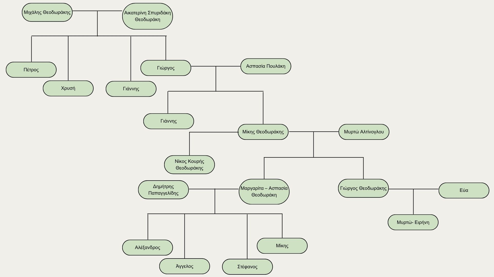

Ο Μίκης Θεοδωράκης υπήρξε μια από τις σημαντικότερες προσωπικότητες της σύγχρονης Ελλάδας, που ξεχώρισε τόσο για τη μουσική του όσο και για την κοινωνική και πολιτική του δράση. Γεννήθηκε στη Χίο στις 29 Ιουλίου 1925 και απεβίωσε στην Αθήνα στις 2 Σεπτεμβρίου 2021. Πατέρας του ήταν ο Γιώργος Θεοδωράκης, κρητικής καταγωγής, και μητέρα του η Ασπασία Πουλάκη από τη Μικρά Ασία. Παντρεύτηκε τη Μυρτώ Αλτίνογλου και απέκτησαν δύο παιδιά και πέντε εγγόνια. Τάφηκε, όπως ο ίδιος επιθυμούσε, στο κοιμητήριο του Γαλατά Χανίων.
Ως καλλιτέχνης, ο Μίκης Θεοδωράκης υπήρξε ένας από τους πιο παραγωγικούς Έλληνες μουσικοσυνθέτες, με έργο που ξεπερνά τις χίλιες συνθέσεις, ενώ εξίσου αξιοσημείωτο είναι το συγγραφικό και ποιητικό του έργο. Η μουσική του καλύπτει ένα ευρύ φάσμα ειδών, όπως συμφωνική μουσική, όπερα, κινηματογραφική μουσική και μελοποιημένη ποίηση, ενώ στις συνθέσεις του συνδυάζονται στοιχεία από την ελληνική παράδοση και την ευρωπαϊκή μουσική. Η φήμη του ξεπέρασε τα ελληνικά σύνορα και, μέσα από τη μελοποίηση έργων σημαντικών ποιητών, όπως του Γιάννη Ρίτσου, του Οδυσσέα Ελύτη και του Γιώργου Σεφέρη, συνέβαλε στη διάδοση της ελληνικής ποίησης στο εξωτερικό. Η μουσική του ερμηνεύτηκε από διεθνώς αναγνωρισμένους καλλιτέχνες, όπως τους Beatles και τη Joan Baez, ενώ η πιο γνωστή σύνθεσή του παγκοσμίως παραμένει ο «Χορός του Ζορμπά».
Παράλληλα, ο Μίκης Θεοδωράκης ανέπτυξε έντονη πολιτική και αντιστασιακή δράση κατά τη διάρκεια δύσκολων περιόδων της ελληνικής ιστορίας. Κατά τη διάρκεια της δικτατορίας, διοργάνωνε συναυλίες στο εξωτερικό με στόχο την ενημέρωση της διεθνούς κοινής γνώμης και, μέσα από επαφές με σημαντικές προσωπικότητες, συνέβαλε στην άσκηση πίεσης για την απομόνωση της Χούντας. Ωστόσο, οι αγώνες του δεν περιορίστηκαν μόνο στα ελληνικά ζητήματα, αλλά στάθηκε στο πλευρό κάθε λαού που στερούταν τη δημοκρατία, με αποτέλεσμα να αναγνωριστεί διεθνώς ως ένα σύμβολο ειρήνης, ενότητας και προστασίας των ανθρωπίνων δικαιωμάτων.
Ο Μίκης Θεοδωράκης τιμήθηκε όσο ζούσε με πολυάριθμα βραβεία και διακρίσεις από διεθνείς φορείς, γεγονός που τεκμηριώνει την παγκόσμια αναγνώριση του έργου του. Η αγάπη του κόσμου για εκείνον παραμένει ζωντανή ακόμα και σήμερα, καθώς πολλοί δημόσιοι χώροι στην Ελλάδα φέρουν το όνομά του ως ελάχιστο φόρο τιμής, ενώ διεθνείς διαγωνισμοί και φεστιβάλ συνεχίζουν να διοργανώνονται προς τιμήν του.
Από τους παππούδες του, Μιχάλη Θεοδωράκη και Αικατερίνη Σπυριδάκη, έως και τα εγγόνια του.
